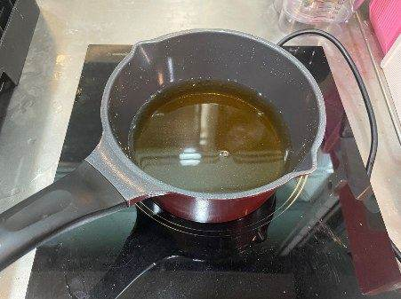
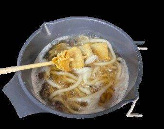
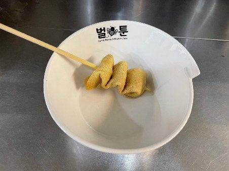
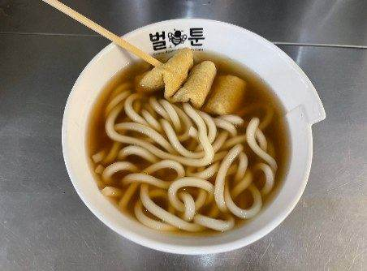
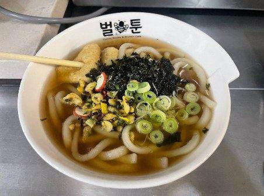

| 메뉴명 | 꼬치어묵우동(인덕션) |
|---|---|
| 판매가격 | 7,900원 |
| 원재료 | 냉동우동면, 꼬치어묵, 김가루, 건더기스프, 대파, 우동소스, 물 420g |
| 사용 부자재 | 라면용기 |
| 메뉴특징 | 쫄깃한 꼬치어묵과 가쓰오부시로 우려낸 깊고 따끈한 국물이 일품인 우동 메뉴 |
조리방법

1
인덕션용 냄비에 가락우동소스 25g(2.5펌프), 뜨거운물 420g을 담는다.
인덕션용 냄비에 가락우동소스 25g(2.5펌프), 뜨거운물 420g을 담는다.

3
중간중간 우동면과 꼬치어묵을 섞어주며 끓인다.
※ 면이 늘어붙을 수 있으므로 바닥까지 긁어 섞기
중간중간 우동면과 꼬치어묵을 섞어주며 끓인다.
※ 면이 늘어붙을 수 있으므로 바닥까지 긁어 섞기

4
조리가 완료되면 라면용기에 꼬치어묵을 먼저 담는다.
조리가 완료되면 라면용기에 꼬치어묵을 먼저 담는다.

5
끓인 우동과 국물을 부어준다.
* 화상에 주의!
* 완성 시, 벌툰 로고 밑까지
국물이 채워짐.
끓인 우동과 국물을 부어준다.
* 화상에 주의!
* 완성 시, 벌툰 로고 밑까지
국물이 채워짐.

6
가운데에 김가루 2g, 대파 5g, 건더기스프 5g을 올린다.
가운데에 김가루 2g, 대파 5g, 건더기스프 5g을 올린다.

7
단무지와 함께 제공한다.
단무지와 함께 제공한다.
2 냉동우동 1개, 냉동꼬치어묵 1개를 넣고 인덕션 5번 / 5분간 조리한다.